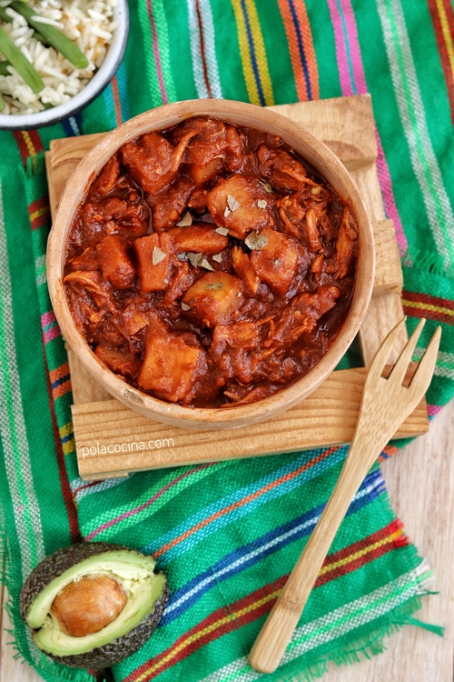

Historia del Adobo
El adobo es una técnica de conservación que consiste en la inmersión de carnes o pescados crudos en un caldo o salsa elaborada con distintos ingredientes: pimentón (el más habitual), orégano, sal, ajos, vinagre y otros, según el lugar y el alimento a adobar. Esta salsa, que también recibe el nombre de adobo, además de alargar la vida útil del producto, ablanda las fibras de la carne, lo aromatiza, le da un característico color rojizo y realza su sabor.
La técnica del adobo es originaria de la cocina española,y fue exportada a países que estuvieron bajo su influencia, como Filipinas,México, y en general América Latina.
Principal conservador
Los adobos aparecen con el fin de poder conservar la carne durante más tiempo, algo que en la antigüedad era bastante complicado. Esto influye mucho en la productividad de la carne, al poder conservarse durante más tiempo se puede producir más cantidad.
Las fuentes nos muestran de un modo genérico que en la época lombarda el adobo de la carne de cerdo recibió un fuerte desarrollo. El gran desarrollo de los métodos de adobo y conservación de la carne también fue un punto muy importante en la época de la Edad Media. Tenemos referencias del adobo en diferentes épocas, pero si no podemos decir con exactitud el momento en el que empezó al método de adobar y conservar la carne.
¿Como se adobaba?
Antiguamente el adobo y el curado de la carne se realizaba en cubas de mármol, pero no se sabe si esta es una tradición celta, romana o lombarda, solo se sabe que es una tradición muy antigua.
Antaño el ciclo del adobo era anual y el cerdo se sacrificaba y adobaba en los meses más fríos de invierno, aunque hoy en día se realiza más de un ciclo de un año, aún se concentra la mayor parte de las operaciones en los meses más fríos y húmedos, de septiembre a mayo, con el fin de salvar la manera natural de la técnica productiva.
La matanza del cerdo en España era algo muy normal en los pueblos y las masadas, en ellas parte de la carne que se extraía la utilizaban para realizar carne adobada, para su mejor conservación, sobre todo en invierno.
El fundamento principal de la gastronomía árabe eran los adobos, aunque su especialidad era el pescado con ácidos y hierbas que se conservaba en tinajas de barro. En la gastronomía judía destacan las fritadas, que solían ir acompañadas de un buen plato de adobo o atún en aderezo. En África, a menudo se ven brochetas de carne picante en los tenderetes callejeros. El adobo también va muy bien para el pollo, y sobre todo para cocinar la carne a la parrilla.